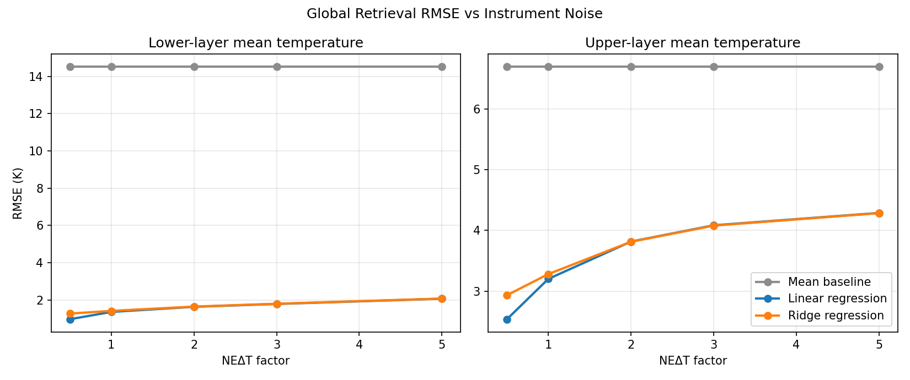
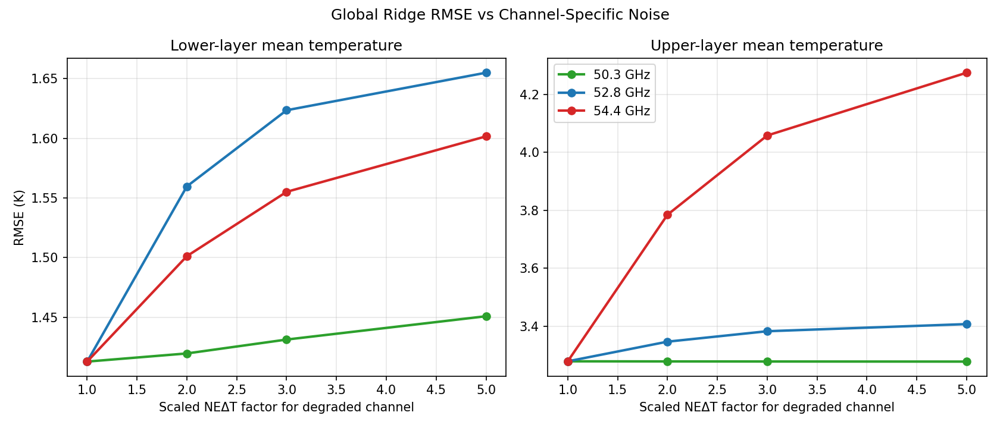
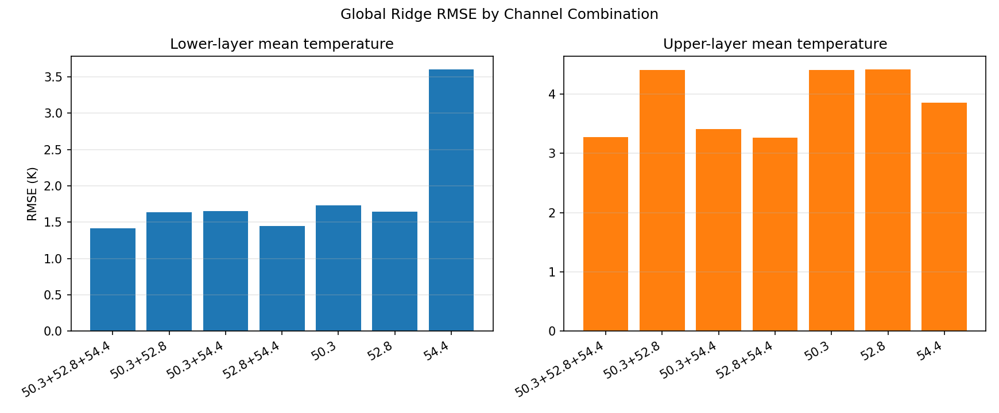

Microwave Satellite Atmospheric Retrieval Under Instrument Constraints: Channel Sensitivity, Noise Propagation, and Instrument Trade-Off Analysis in a Physics-First PyARTS Framework
1. Introduction
This project presents a controlled framework for studying how microwave instrument design decisions propagate into retrieval performance through radiative-transfer simulation, instrument-noise modeling, and interpretable retrieval experiments. It is built around a clear-sky PyARTS forward model, a minimal oxygen-band instrument definition, and a set of structured retrieval experiments designed to connect channel choice and noise assumptions to practical temperature-retrieval behavior.
That framing is directly relevant to research on new atmospheric satellite missions. The project focuses on four themes that sit close to the center of mission-oriented remote sensing research:
- simulation of observations,
- incorporation of instrument characteristics and errors,
- assessment of technical trade-offs,
- and bridging instrument design to the later use of the measurements.
Microwave satellite observations are central to atmospheric remote sensing because they provide information about temperature and humidity structure under conditions where visible and infrared systems are more limited. Temperature sounding channels in the oxygen absorption band are especially important for numerical weather prediction, atmospheric analysis, and long-term climate-oriented observation because their radiative response is tied directly to well-understood molecular absorption physics.
For new atmospheric satellite missions, however, the scientific value of a microwave channel set cannot be judged from radiative-transfer theory alone. Instrument design decisions such as channel placement and noise performance affect what information is practically retrievable from the observations. A channel may be physically sensitive to a target quantity, but still contribute limited usable skill if its information is redundant with other channels or if noise dominates the signal relevant to a given retrieval problem.
The core intellectual contribution of this project is therefore not simply “a retrieval pipeline.” I developed a structured experimental framework that shows retrieval performance emerging from two interacting sources:
- physical radiative sensitivity,
- and dataset or regime covariance structure.
That distinction matters because a retrieval can look successful in a narrow dataset while still failing to generalize across atmospheric regimes. The framework was built specifically to expose that boundary in a controlled, interpretable way.
2. Research Question
The central research question is:
How do oxygen-band channel selection and instrument noise affect lower-layer and upper-layer atmospheric temperature retrieval accuracy in a simulation-based, physics-first microwave retrieval framework?
This question can be divided into four related sub-questions:
- Which channels are most sensitive to lower-layer and upper-layer temperature structure?
- How does retrieval error change as instrument noise increases?
- How does degrading a specific channel affect retrieval performance relative to degrading the instrument uniformly?
- What is the minimal channel subset that retains most of the useful information for the current retrieval targets?
These questions are directly aligned with early-stage satellite mission design, where channel placement, noise requirements, expected measurement quality, and downstream retrieval value must be considered together rather than separately.
The central scientific insight of the project is that retrieval performance emerges from two interacting components that must be analyzed together: radiative sensitivity, which defines what the channels can in principle observe, and dataset or regime covariance structure, which shapes how much of that signal is actually recoverable in a given retrieval setting. Making that interaction explicit is one of the main reasons the framework is useful.
3. System Description
The pipeline is built around clear-sky PyARTS forward simulations using ERA5 pressure-level atmospheric profiles. The forward model ingests temperature, specific humidity, and geopotential from ERA5, converts humidity into water-vapor volume mixing ratio, computes altitude from geopotential, and simulates brightness temperatures using oxygen and water-vapor absorption under a controlled clear-sky assumption.
The current instrument representation is intentionally minimal. It uses three oxygen-band channels:
50.3 GHz52.8 GHz54.4 GHz
Channel-specific instrument noise is represented through NEΔT, and Gaussian observation noise is applied with deterministic seeding so that all experiments remain reproducible.
Two scalar retrieval targets are considered:
lower_layer_mean_temperature_kupper_layer_mean_temperature_k
These targets are deliberately simple. They allow the relationship between radiative sensitivity, channel design, and retrieval performance to be studied before moving to a higher-dimensional profile retrieval problem.
The atmospheric dataset includes three ERA5-derived regimes:
winter_midlatitude_maritime_samplelower_latitude_maritime_2020high_latitude_continental_2020
In addition, a small set of synthetic stress-test profiles is retained as explicitly labeled out-of-distribution cases. These are used for controlled robustness checks, not for ordinary model training.
4. Methods
Forward simulation and sensitivity layer
The first stage of the pipeline establishes a validated clear-sky forward-model bridge from ERA5 to PyARTS. From that baseline, I ran several controlled sensitivity experiments:
- uniform atmospheric temperature perturbation,
- lower-layer and upper-layer temperature perturbations,
- humidity perturbations,
- multi-profile comparisons across atmospheric regimes.
These experiments isolate which channels respond most strongly to different parts of the atmospheric temperature structure and whether those sensitivities remain stable across regimes.
Retrieval models
The retrieval layer was intentionally kept simple and interpretable. Three models were used:
- mean baseline,
- linear regression,
- ridge regression.
These models were chosen not for maximum predictive power, but because they make it possible to connect retrieval behavior directly to the structure of the observation vector and to known channel physics. No nonlinear models, neural networks, or expanded predictor sets were introduced.
Noise modeling
Instrument noise was represented through channel-specific NEΔT. Two complementary noise experiments were then built:
- a uniform noise sweep, in which all channel
NEΔTvalues were scaled together by multiplicative factors; - a channel-specific degradation experiment, in which only one channel
NEΔTwas scaled at a time.
This separation allows overall noise propagation and channel-specific vulnerability to be distinguished cleanly.
Channel ablation
To test channel necessity directly, all 3-channel, 2-channel, and 1-channel combinations were evaluated. This makes it possible to identify whether a reduced channel set can retain most of the useful retrieval skill for the current scalar targets.
Evaluation setup
Two main retrieval evaluation modes were used:
- global leave-one-profile-out cross-validation across all ERA5 profiles,
- source-specific leave-one-profile-out cross-validation within each
source_name.
The source-specific experiments were used as controlled diagnostics of within-regime behavior. Separate leave-one-regime-out testing was also performed earlier in the project and showed that a single global linear mapping does not generalize well to unseen regimes.
5. Key Findings
Regime dependence
The retrieval behavior is strongly regime-dependent. A single global linear retrieval can appear successful under profile-level cross-validation, but it fails badly under leave-one-regime-out testing. This shows that a global linear mapping is still influenced heavily by regime-specific covariance structure rather than by a regime-invariant radiative relationship.
At the same time, source-specific retrieval substantially improves within-regime behavior. The experiments therefore reveal a mixed but interpretable result: the retrieval is not arbitrary, but the effective mapping between brightness temperatures and target temperature depends on the thermodynamic regime being sampled.
Vertical channel sensitivity
The vertical sensitivity results were physically consistent:
52.8 GHzis the most important channel for the lower-layer target,54.4 GHzis the most important channel for the upper-layer target,50.3 GHzplays a smaller and more secondary role under the present scalar-target setup.
This pattern emerged first in the forward sensitivity experiments and was reinforced by later retrieval and channel trade-off experiments.
Noise propagation behavior
The uniform noise sweep showed that retrieval error increases smoothly as NEΔT increases. This held for both targets and for both global and source-specific retrieval setups. Lower-layer retrieval degraded more slowly than upper-layer retrieval, both in RMSE and in normalized RMSE.
This indicates that the current three-channel system carries a more robust lower-layer temperature signal than upper-layer temperature signal under the present clear-sky assumptions. In other words, upper-layer retrieval is not just harder because of the model choice; it is harder because the available observation vector constrains it less directly.
See noise_sweep_rmse.png, which links progressive NEΔT degradation directly to retrieval uncertainty, and noise_sweep_target_comparison.png, which contrasts lower-layer and upper-layer degradation under the same instrument assumptions.
{kind=link}
{kind=link}

NEΔT propagates into larger retrieval uncertainty.Channel-specific degradation effects
The one-channel-at-a-time noise experiment clarified which parts of the instrument matter most:
- degrading
52.8 GHzhurts lower-layer retrieval most, - degrading
54.4 GHzhurts upper-layer retrieval most, - degrading
50.3 GHzhas weak effect on upper-layer retrieval.
This result matters because it shows that uniform instrument-noise assumptions can hide channel-specific weaknesses. Overall instrument quality matters, but different retrieval targets are not equally vulnerable to the degradation of every channel.
The channel-specific behavior is summarized in rmse_vs_noise_by_channel.png, which identifies target-dependent channel vulnerability rather than only overall noise sensitivity.
{kind=link}

Minimal channel combinations
The channel ablation experiment showed that the strongest reduced channel pair is:
52.8 + 54.4 GHz
This pair retains nearly all of the retrieval skill of the full three-channel configuration for the present lower-layer and upper-layer scalar temperature targets. The 50.3 GHz channel is not useless, but it contributes the least unique information under the current setup.
This result is shown most directly in rmse_by_channel_combination.png, which tests channel necessity and redundancy under the current retrieval objectives.
{kind=link}

6. System Understanding
Taken together, the experiments provide a coherent interpretation of the retrieval system.
First, retrieval performance is controlled by both physical channel sensitivity and dataset covariance structure. The forward experiments show that the oxygen-band channels respond differently to lower-level and upper-level perturbations in a physically meaningful way. The retrieval experiments confirm that these physical differences are reflected in practical prediction skill. At the same time, the regime-dependence experiments show that a single global linear mapping is not stable across atmospheric regimes, meaning covariance structure still matters strongly.
Second, the channels are overlapping rather than independent. 52.8 GHz, 54.4 GHz, and 50.3 GHz do not correspond to completely separate atmospheric layers. Instead, they sample overlapping parts of the oxygen-band temperature response with different weighting. This explains why:
- no single channel fully determines a target,
- the strongest reduced subset is a pair rather than a single channel,
- and a reduced channel set can sometimes perform nearly as well as the full system.
Third, upper-layer retrieval is harder because it depends more strongly on the higher-frequency oxygen response and because the current observation vector is small. The lower-layer target is better supported by the current three-channel system, especially through 52.8 GHz. The upper-layer target remains physically meaningful, but more fragile under noise and more sensitive to sample-dependent covariance.
Overall, this project demonstrates that the retrieval is neither purely a covariance artifact nor purely a direct physical inversion. The framework isolates a structured combination of radiative sensitivity and regime-specific statistical mapping, which is precisely why it is useful as a research baseline.
7. Instrument Design Implications
One reason this matters for new atmospheric satellite missions is that it connects early instrument assumptions to downstream retrieval behavior in a traceable way. In the present framework:
- channel choice is linked directly to retrieval skill,
NEΔTassumptions are linked directly to retrieval uncertainty,- channel redundancy is linked to possible instrument simplification,
- and regime dependence highlights limits of a single global retrieval or later AI/ML generalization.
This is not yet a mission design recommendation framework, but it is a useful early-stage instrument trade-off reasoning framework.
Several practical lessons for instrument design follow from the experiments.
Importance of 52.8 GHz
52.8 GHz is the clearest priority channel for lower-layer temperature retrieval. It dominates the lower-layer sensitivity diagnostics, its degradation produces the largest lower-layer retrieval penalty, and its inclusion is necessary for the strongest reduced channel configurations.
Importance of 54.4 GHz
54.4 GHz is the clearest priority channel for upper-layer temperature retrieval. It dominates upper-layer sensitivity, and any reduced configuration without it loses substantial upper-layer skill. Its noise performance is therefore especially important if upper-atmospheric temperature information is a design objective.
Limited role of 50.3 GHz for current scalar targets
Under the present setup, 50.3 GHz contributes the least unique information. This does not mean it is physically irrelevant, but it does mean that these specific scalar retrieval targets do not justify it as strongly as 52.8 GHz and 54.4 GHz. Final design conclusions would still require broader targets, broader atmospheric regimes, and more realistic uncertainty structures.
Trade-offs
The experiments reveal that channel prioritization cannot be based on sensitivity arguments alone. Channel usefulness depends on:
- which target is being retrieved,
- how much channel information overlaps,
- how noise propagates into the retrieval,
- and whether the retrieval must generalize across regimes.
That is exactly the type of design trade-off problem faced in new atmospheric satellite missions.
8. Why This Demonstrates Fit to the PhD Topic
This project maps directly onto the scientific themes of a doctoral position in new atmospheric satellite missions.
It demonstrates:
- simulation of observations through PyARTS-based microwave forward modeling,
- incorporation of instrument characteristics and errors through channel-specific
NEΔT, - assessment of technical trade-offs through noise sweeps, channel degradation, and ablation,
- microwave sensor relevance through oxygen-band temperature sounding,
- physics + computing through radiative-transfer simulation paired with reproducible data analysis,
- careful scientific communication through explicit limitations and structured experiment interpretation.
Just as importantly, the project does not stop at forward simulation. I used the framework to connect instrument assumptions to retrieval consequences and to separate physically meaningful signal from regime-specific covariance where possible. That is the kind of reasoning needed before moving to more complex retrieval systems, inverse methods, or machine-learning approaches.
9. Limitations
The current system is intentionally limited:
- clear-sky only,
- linear retrieval only,
- small dataset,
- synthetic noisy observations rather than real satellite data,
- scalar temperature targets rather than full profile retrieval,
- no formal inverse methods such as optimal estimation yet.
These limitations are not hidden weaknesses of the project; they define the controlled baseline from which more realistic mission-relevant retrieval studies can be built.
The current channel-importance conclusions should therefore be read as valid within the tested regimes and retrieval targets, while broader atmospheric variability will still be required to confirm how general those rankings remain.
The project should therefore be interpreted as a controlled research prototype rather than an operational retrieval system. Its value lies in establishing a transparent experimental framework, not in claiming final mission performance.
10. Extension to PhD Research
The current framework suggests a coherent next research trajectory rather than just a generic list of extensions.
The natural next step from the current framework would be to move from empirical linear retrieval toward Bayesian inverse methods, especially optimal estimation (OEM), while keeping the present clear-sky system as the benchmark baseline. In parallel, the current sensitivity results could be formalized through Jacobians, weighting functions, and information content analysis, so that the difference between physically recoverable signal and dataset-dependent statistical skill is quantified more rigorously rather than inferred indirectly.
From there, the clear-sky framework would provide a natural baseline for later work with cloud- and scattering-aware retrieval problems, including future use of Chalmers atmospheric water and hydrometeor resources as compatible extensions rather than as data already used here. Broader atmospheric datasets and wider regime coverage would also be needed to test whether the current channel-priority results remain stable beyond the present controlled sample. This framework also provides the controlled baseline required for integrating physics-informed machine learning without conflating model flexibility with physical information content. In that sense, machine learning is not ignored here, but it is placed in the correct sequence: after the forward-model baseline and error structure are understood.
11. Conclusion
This project demonstrates a coherent and research-grade framework for studying how microwave oxygen-band channel design and instrument noise affect atmospheric temperature retrieval performance. The main conclusions are that retrieval behavior is regime-dependent, lower-layer retrieval is controlled primarily by 52.8 GHz, upper-layer retrieval is controlled primarily by 54.4 GHz, retrieval error increases smoothly with NEΔT, and the strongest reduced channel subset for the present scalar targets is 52.8 + 54.4 GHz.
The broader significance of the work is not that it solves atmospheric retrieval in operational form, but that it establishes a transparent link between radiative physics, observation simulation, instrument characteristics, and retrieval accuracy. This framework isolates the boundary between physically recoverable information and dataset-dependent retrieval skill, providing a controlled basis for evaluating microwave instrument design trade-offs. That makes it a strong foundation for PhD-level research on new atmospheric satellite missions, where physically informed instrument trade-offs must be evaluated before more complex retrieval systems are built.